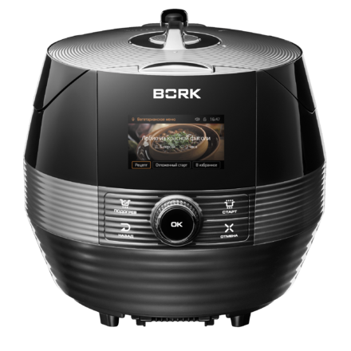
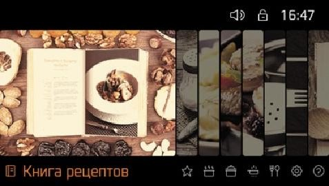
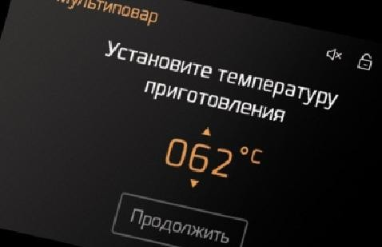
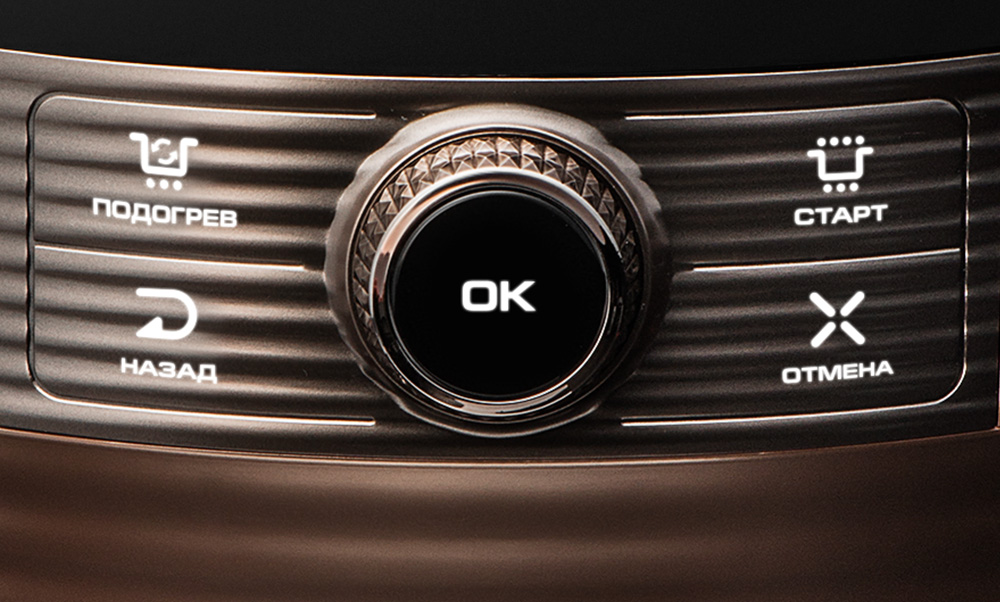
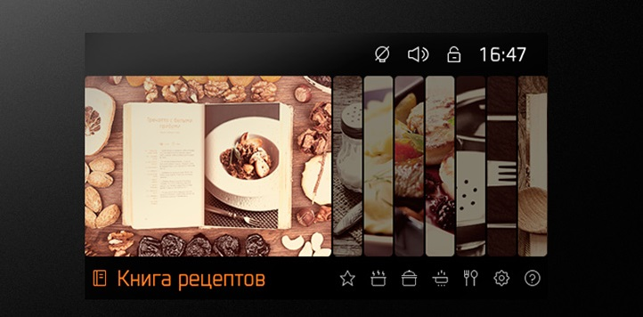
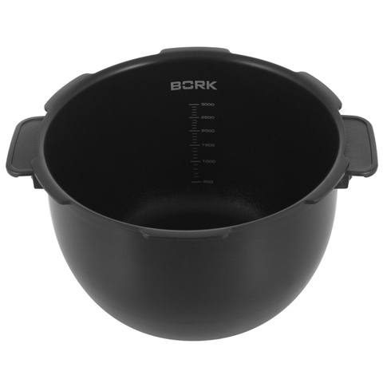
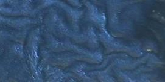
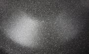
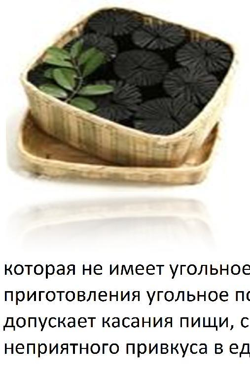

Мультишеф BORK U803
Технические характеристики
Мощность: 1400 Вт
Общий объем чаши: 5 л
Полезный объем чаши: 3 л Тип чаши: Многослойная
Материал корпуса: Пластик
Тип управления: Сенсорное
Тип нагревательного элемента:
Индукционный
Приготовление под давлением: Да
Страна производитель: Корея
Комплектация
Решетка пароварки
Мерный стакан 1шт
Ложка: 1 шт
Более 200 рецептов с автоматическим приготовлением
217 рецептов с автоматическим приготовлением. Блюда из национальных кухонь всего мира теперь можно приготовить нажатием нескольких кнопок мультишефа. Достаточно следовать инструкциям на дисплее, чтобы мультишеф порадовал вас полезным завтраком, праздничным ужином или изысканным десертом. Оптимальный набор ингредиентов и проверенный способ приготовления гарантированы профессиональными поварами. На цветном дисплее в разделе Книга рецептов можно посмотреть, как будет выглядеть готовое блюдо.
Электронная технология точного приготовления «1+1»тм
Технология дает возможность с точностью до 1 градуса и 1 минуты выбрать температуру и время приготовления. 4 автономные зоны нагрева включаются IQ-системой в зависимости от выбранной программы. Индукционные нагреватели обеспечивают быстрое и равномерное распространение тепла по всей чаше, это лучший способ с точки зрения надежности, безопасности и энергоэффективности. Стабильный и контролируемый уровень давления обеспечивается электромагнитным клапаном выпуска пара под контролем микропроцессора.
Удобство управления
Мультишеф управляется при помощи всего 5 кнопок и оснащен функцией подробных голосовых подсказок. Теперь процесс готовки понятен интуитивно и не требует чтения сложных инструкций к технике.
Индикация и управление
Отложенный старт
Отложенный старт до 13 часов сработает с точностью до минуты. Функция Отложенный старт доступна для встроенных рецептов состоящих из 1 этапа приготовления и режимов Пароварка, Тушение, Поджаривание, Мультиповар.
Замок от детей
Данная функция позволяет обеспечить безопасность детей, блокируя панель управления. Для активации и дезактивации функции одновременно нажмите кнопки СТАРТ и ПОДОГРЕВ.
Подогрев
По умолчанию функция автоматического подогрева выключена во встроенных рецептах и включена в режимах Пароварка, Тушение, Поджаривание, Мультиповар. Для отключения/включения функции автоматического подогрева нажмите кнопку ПОДОГРЕВ в процессе приготовления.
Избранные рецепты
В избранные рецепты можно добавить до 20 самых любимых блюд.
Настройки
Используется для запуска раздела САМООЧИСТКИ, НАСТРОЙКИ ТЕКУЩЕГО ВРЕМЕНИ, УРОВНЯ ГРОМКОСТИ ГОЛОСОВЫХ ПОДСКАЗОК, ТЕМПЕРАТУРЫ ПОДОГРЕВА, РЕЖИМА ЭНЕРГОСБЕРЕЖЕНИЯ.
Режим демонстрации
Заходите во вкладку Настройки-Режим Энегросбережения. Зажать одновременно кнопки: Подогрев+Старт+Отмена.
Все функции будут работать, но нагрева происходить не будет. Для отключения демо-режима нужно отключить прибор от сети.
Чаша
Многослойная чаша Мультишефа обладает свойствами казана, кастрюли, сковороды, духовки благодаря правильной теплопроводности и теплоемкости. Чаша оснащена удобными, термостойкими рукоятками благодаря, которым чаша легко извлекается сразу после приготовления блюд. Общий объем чаши – 5 литров.
Полезный объем чаши – 3 литра.
Для удобства чаша оснащена рисками.
Чаша состоит из 8-ми компонентов (слоев), которые интегрированы в чашу в особом порядке:

WRINKLE – Ребристое антипригарное покрытие с повышенным инфракрасным спектром, обеспечивающее защиту от механических воздействий.
Данное покрытие напоминающее «морщины» обладает большей площадью в сравнении с обычными гладкими покрытиями, таким образом, теплоотдача поверхности чаши увеличена за счет увеличение инфракрасного спектра.
TOP – Антипригарное покрытие предотвращает пригорание пищи к поверхности чаши. Является первым звеном в работе всего антипригарного комплекса.
PRIMER Charcoal – Антикоррозийное покрытие с добавлением порошкового активированного угля. Так как основано на экологически чистом материале, этот материал по своим свойствам можно сравнить с сажей на старой чугунной кухонной сковороде. Свойства этого материала уникальны тем, что само восстанавливается.
Это способствует длительному использованию посуды.
Во время готовки пищи, когда масло нагревается и происходит микрохимическая реакция, в это время посуда, которая не имеет угольное покрытие, сгорает. В этом и есть разница, во время приготовления угольное покрытие выступает в качестве защитного покрытия, которое не допускает касания пищи, самого метала, и впоследствии возникновения сгорания и неприятного привкуса в еде.
PRE PRIMER – Покрытие с повышенной прочностью с антикоррозийными свойствами AL – Сплав алюминия обладающего высокой. теплопроводностью
STS – Сплав нержавеющей стали, обладающий феромагнитными свойствами AL – Сплав алюминия обладающего высокой теплопроводностью.
STS – Сплав нержавеющей стали, обладающий феромагнитными свойствами.
Режим энергосбережения
Прибор автоматически переключится в энергосберегающий режим, если ни одна из кнопок не будет активирована в течение установленного вами времени (По умолчанию: 5 минут; диапазон: 5–60 минут с шагом 1 минута.). Прибор выйдет из этого режима при повороте рычага блокировки крышки / нажатии кнопки ОК.
Режим «демо»
Заходите во вкладку НАСТРОЙКИ, затем во вкладку РЕЖИМ ЭНЕРГОСБЕРЕЖЕНИЯ. После этого необходимо нажать одновременно кнопки: ПОДОГРЕВ+СТАРТ+ОТМЕНА
Все функции будут работать, но нагрева происходить не будет. Для отключения демо-режима нужно отключить прибор от сети.
Аргументы для продажи
Мультишеф BORK U803 он абсолютно самостоятельный!
Мультишеф оснащен различными программами приготовления: программами с возможностью изменения параметров приготовления и более чем 200 «Авторскими рецептами».
Блюда готовятся самостоятельно, Вам достаточно просто положить ингредиенты в чашу и выбрать режим, все остальное Мультишеф сделает сам.
IQ-система автоматизированного приготовления берет на себя полный контроль процесса приготовления: контролирует время, давление, температуру, в зависимости от выбранного блюда и количества ингредиентов.
Автоматические авторские программы дают возможность приготовить блюда высокой кухни без навыков профессионала, с максимальной точностью воспроизводя рецепты шеф-поваров.
4 автономные зоны нагрева включаются IQ-системой в зависимости от выбранной программы.
Мультишеф BORK U803– готовит вкусно и полезно!
Приготовление под давлением. Это быстро - сокращает время приготовления, полезно - сохраняет питательные свойства продуктов, эстетично - сохраняет натуральный цвет продуктов.
Сверхпрочная восьмислойная чаша Мультишефа BORK обладает идеальной теплопроводностью и теплоемкостью, придавая прибору свойства казана, кастрюли, сковороды, скороварки и духовки.
Высокотехнологичный антипригарный комплекс PRIMER Charcoal на основе органических соединений обеспечивает длительное использование чаши и абсолютную безопасность для здоровья.
Индукционные нагреватели обеспечивают мгновенное и равномерное распространение тепла по всей чаше, это лучший способ с точки зрения надежности, безопасности и энергоэффективности. Отсутствие фазы нагрева увеличит скорость приготовления, что сохранит полезные качества и вкусовые свойства продуктов.
Мультишеф BORK U803– это просто и удобно!
Если у вас нет времени готовить завтрак, обед или ужин, Мультишеф сделает это за вас. Достаточно заранее поместить продукты, выбрать нужный режим и блюдо приготовится Мультишефом к назначенному времени.
Голосовые подсказки обеспечивают простоту использования и позволяют обходиться без инструкции, экономя время.
Функция автоматического поддержания температуры после приготовления позволит получить потрясающий результат в любое время.
Сенсорная панель управления оснащена поворотным шатлом, что является самым современным, удобным и интуитивно понятным типом управления.
Удобные рукоятки чаши позволяют легко извлечь её сразу после приготовления.
Функция самоочистки упрощает использование Мультишефа.
Мультишеф BORK U803 – это надежно и современно!
Современный дизайн и передовые технологии приготовления, уникальная чаша и интеллектуальная IQ-система, голосовые подсказки и экологическая безопасность ставят Мультишеф BORK в один ряд с лучшими изобретениями человечества.
Электромагнитный клапан сброса давления обеспечивает автоматический, тихий и безопасный выпуск пара после завершения приготовления.
20 систем безопасности обеспечивают комфортное использование. К ним относятся: защита от скачков напряжения, от перегрева чаши, защита от открывания крышки в процессе приготовления под давлением, от включения без чаши, защита от включения с открытой крышкой, голосовой гид, подсказывающий правильность действий, система сенсоров и датчиков, контролирующих этапы работы, и многое другое.
Электронная технология точного приготовления «1+1»ТМ дает возможность с точностью до 1 градуса и 1 минуты выбрать температуру и время приготовления.
С высочайшей точностью Мультишеф поддерживает установленную температуру благодаря индукционным нагревательным элементам и контролю IQ-системы.
Стабильный и контролируемый уровень давления обеспечивается электромагнитным клапаном выпуска пара под контролем микропроцессора.